装备清单
已完成 72 / 72。清单直接读
js/data.js，改完数值重跑
node gen-gear-sheet.js 就会更新。
贴图规格
尺寸 48 × 48 像素，PNG，透明背景。主体占满中央 40 × 40，四周留 4px。
显示尺寸 局内装备条为 24px，藏身处为 34px，细节要粗、要能一眼认出，别画密集细花纹和小字。
画法 物品图标可以用比场景更适合辨识的展示角度，不必受 75° 俯视约束。左上光源，硬边像素，无抗锯齿、无外发光、不画投影。
命名 rifle.png shotgun.png smg.png pistol.png；helmet1.png～helmet6.png；body1.png～body6.png；bag01.png～bag05.png（旧 bag.png 仅作空槽图标）。
位置 tide/assets/gear/ 目录下。
等级递进原则
1 → 3 级 能"看穿"的材料：布、纤维、织带。靠材质和缺口区分。
4 → 6 级 硬质插板/外壳轮廓，靠厚度、覆盖面积、附件数量区分，不要只换颜色。
剪影优先 六张摆在一起时，只看黑色剪影就该能排出 1～6 的顺序：越低越软塌越窄，越高越方越宽越重。
调色 低饱和旧化。头盔走灰绿/哑光黑，护甲走土黄→军绿→深灰，高级别加一点脏铜色螺栓当高光点。
分级色只是辅助：Lv1 灰绿 · Lv2 · Lv3 · Lv4 · Lv5 · Lv6
武器weapon12 张
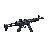
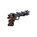
头盔helmet10 张 · Lv1–Lv6
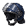
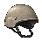
新增8款图标与缩小预览 · 同级装备通过耐久、重量与瞄准准备时间取舍；不再直接降低移速，负重分档仍有效。
身体护甲body armor10 张 · Lv1–Lv6
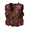
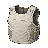
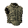
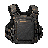
背包backpack5 张 · 决定携带容量
五档图标与原稿记录 · 前三档由护甲商人出售。
近战武器melee3 张 · 4 切换
持刀动画与原稿 · 折叠刀与战斗刀有售，砍刀暂不开放获取。首次赠刀绑定不可出售。
枪械配件attachments32 件 · 五槽位
配件原稿、统一视角与预览 · 绿蓝军火商有售，紫色通过搜刮获得。局内外均可即时改装。
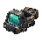
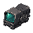
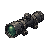
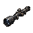
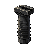
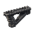
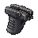
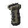
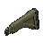
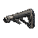
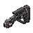
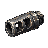
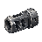
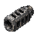
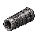
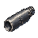
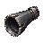
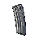
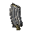
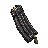
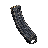
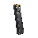
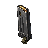
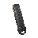
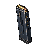
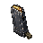
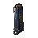
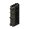
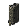
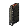